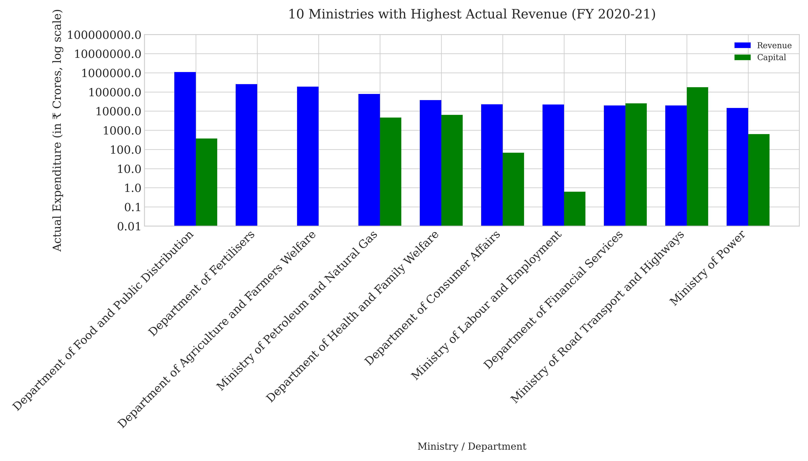
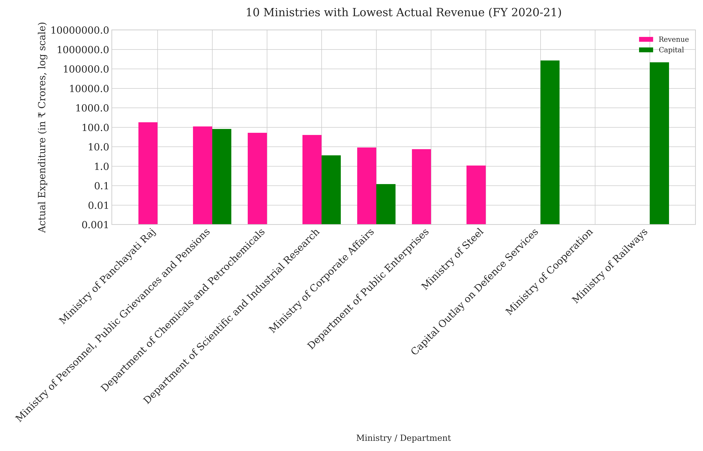
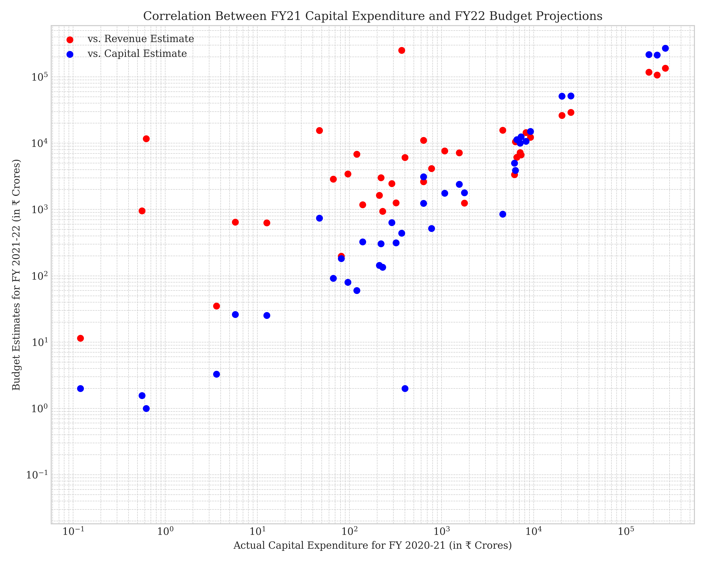
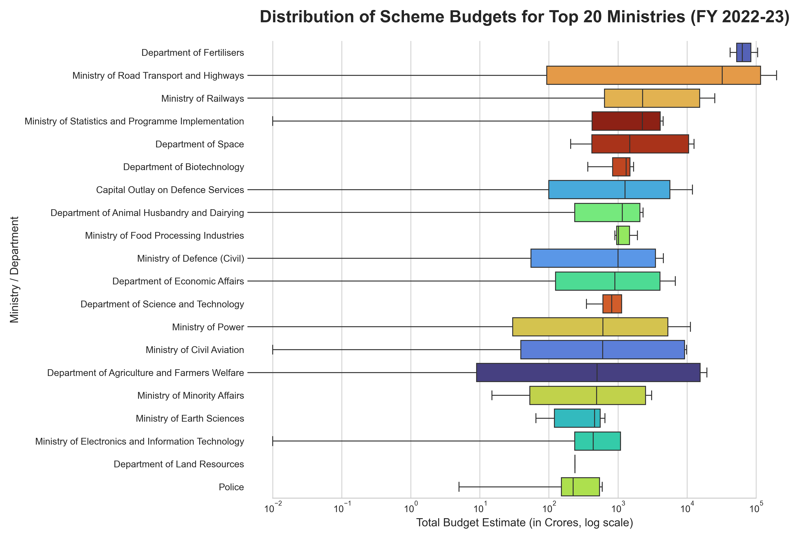
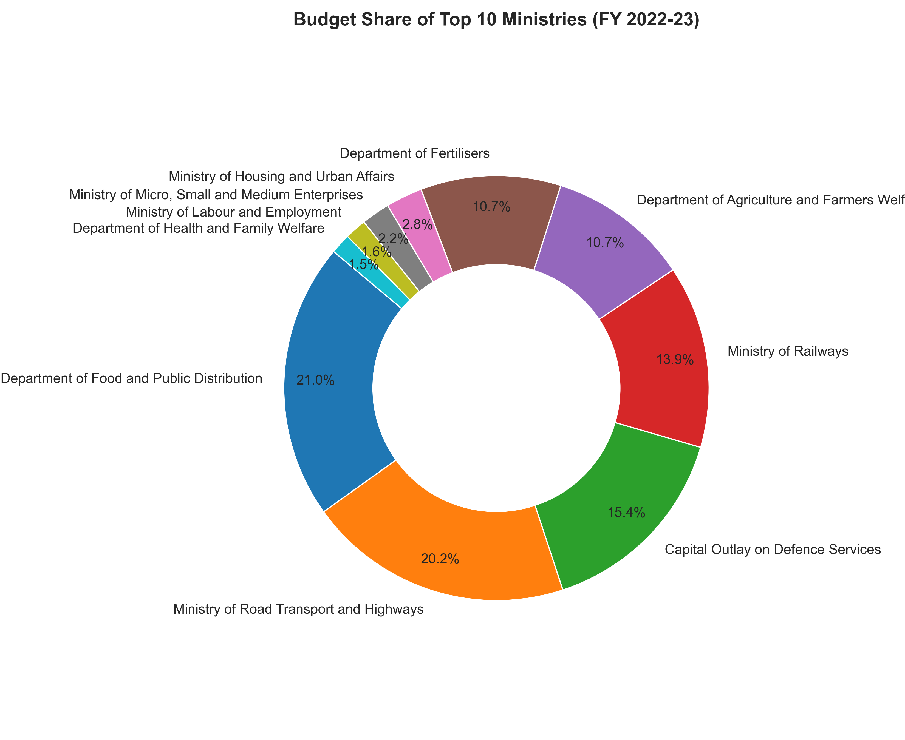

Data Science Visualizations
Exploring complex datasets and telling stories through visualization. Plots and analyses from various personal and academic projects.
Analysis of Ministry Budget Allocations for Central Sector Schemes
An in-depth look at Central Sector Schemes, uncovering spending priorities, hierarchies, and fiscal trends across various ministries.
Quick Navigation

1. Top 10 Schemes by Revenue (2020-21)
Key Points
- Heavy Budget Concentration: Consumer Affairs (26.9%), Railways (17.5%), and Defence (17.0%) command 61.4% of the total budget.
- Significant Drop-off: A sharp decline in allocation occurs after the top three ministries.
- "Other" Category is Small: The bottom four ministries' combined budget is less than any single top-three ministry.
Inferences
- Core National Priorities: Spending is focused on Public Welfare, National Infrastructure, and National Security.
- Clear Spending Hierarchy: A few ministries receive the lion's share, reflecting their strategic importance.
- Social Sectors Follow Core Infrastructure: Social sectors have a smaller piece of the pie compared to infrastructure and security.

2. Lowest 10 Schemes by Revenue (2020-21)
Key Points
- Uneven Revenue–Capital Mix: Most ministries show higher revenue expenditure (operational costs) than capital.
- Capital-Dominant Outliers: Railways and Defence Services stand out with disproportionately high capital expenditure.
- Log-Scale Emphasis: The log scale reveals massive differences in spending across ministries.
Inferences
- Infrastructure-Centric Outliers: Railways and Defence are driven by capital-heavy projects.
- Operational Overheads: Smaller departments primarily fund maintenance, salaries, and ongoing programs.
- Fiscal Imbalance: Steep variance in capital spending signals unequal capacity or necessity for infrastructure.

3. Capital Spend vs. Future Budget Correlation
Key Points
- Positive Correlation: Higher capital spending in FY21 correlates with higher budget allocations in FY22.
- Dual Estimate Comparison: The link is stronger for future capital budgeting than for revenue budgeting.
- Wide Range of Scale: The log-log scale reveals expenditure spread across seven orders of magnitude.
Inferences
- Capital Spending Rewards Future Allocation: Effective use of capital budgets in one year tended to increase allocations for the next.
- Revenue Budgets Less Predictive: Revenue allocations are influenced more by operational factors than past capital investment.
- Structural Spending Divide: A tiered budget ecosystem exists where a few ministries dominate capital flows.

4. Scheme Budget Distribution (FY 2022–23)
Key Points
- High Variability: Wide variation in scheme budgets across ministries, especially in Road Transport and Agriculture.
- Log-Scale Spread: Budgets span from fractions of a crore to nearly ₹10⁵ crores.
- Concentrated vs. Dispersed: Some ministries have tightly grouped budgets, while others show broader distributions.
Inferences
- Infrastructure and Agriculture Lead: Expansive budget ranges reflect their extensive scheme portfolios.
- Strategic and Scientific Stability: Ministries like Space and Biotechnology show steady, long-term investment.
- Defense and Power Maintain Core Funding: Controlled yet high allocations underscore their role as essential public services.

5. Budget Share of Top Ministries (FY 2022-23)
Key Points
- Food & Public Distribution (21.0%) and Road Transport (20.2%) cover over 41% of the budget.
- Defence (15.4%) and Railways (13.9%) also receive significant shares.
- Remaining ministries have much smaller shares, mostly below 11%.
Inferences
- The budget prioritizes food distribution, transport infrastructure, and defense.
- Specialized ministries like MSME and Labour receive comparatively minor shares.
- A diversified but dominant focus exists on food security, transportation, and defense spending.